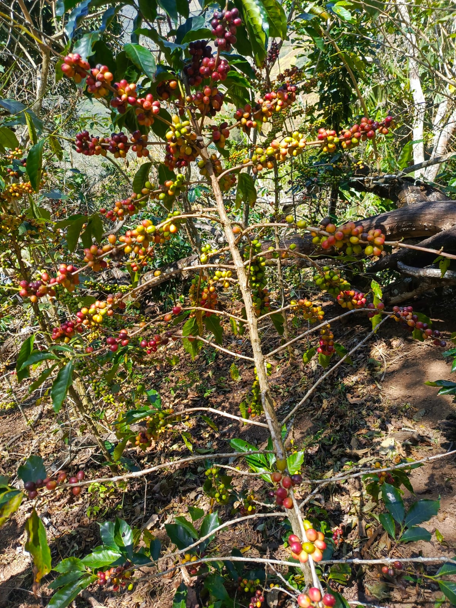
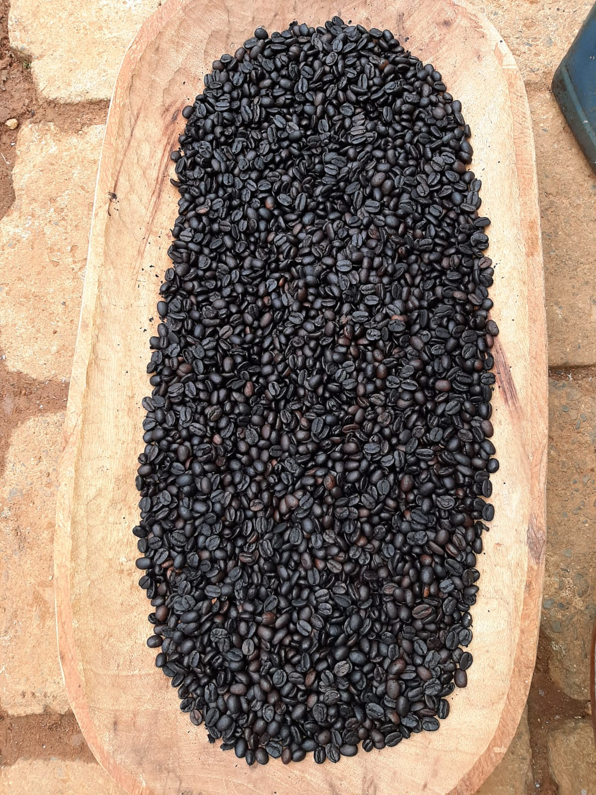
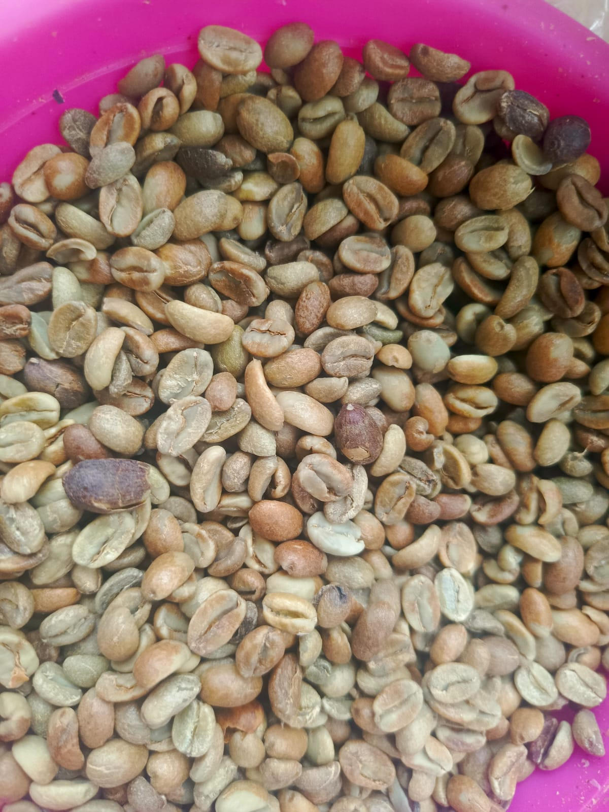
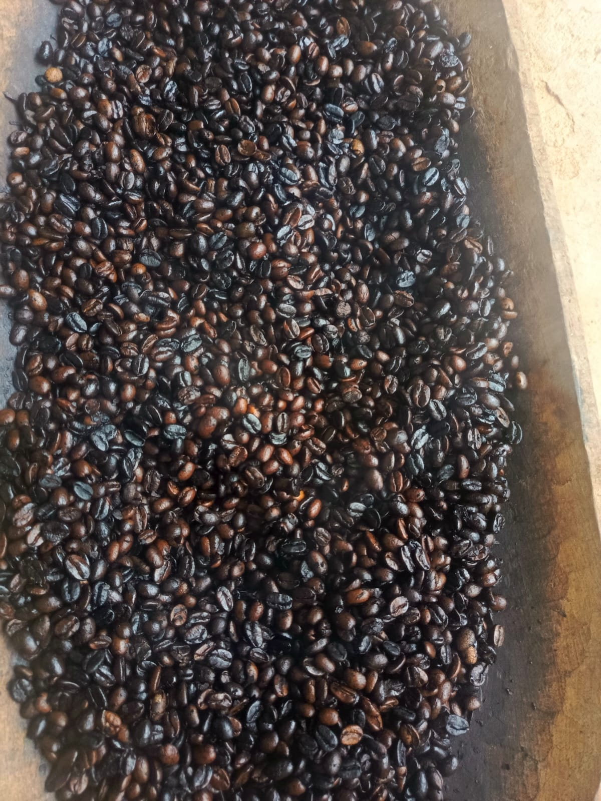

01
Cosecha y selección
Elegimos los frutos en su punto ideal.
CULTIVADO EN OLMEDO, LOJA
Café artesanal seleccionado, tostado con cuidado y lleno del sabor de Loja.
Conoce el origen ↓
CAFÉ CON ORIGEN
Nuestro café nace entre las montañas de Olmedo, en la provincia de Loja. Acompañamos cada etapa: desde la selección de las cerezas maduras hasta el secado y tostado de los granos.

DEL CAFETAL AL TOSTADO
Trabajo real, café real. Mira cómo transformamos el fruto de nuestra tierra.
Elegimos los frutos en su punto ideal.
Cuidamos el grano antes del tostado.

El aroma y el sabor llegan a su mejor punto.
NUESTRA COSECHA


TU CAFÉ ESTÁ LISTO
Completa tus datos y envía el pedido por WhatsApp. Te confirmaremos la disponibilidad y la entrega al interno.